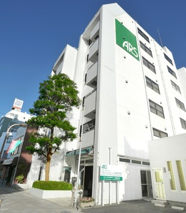

ARS Computer College
ゲームスクールコーナー http://www.arsnet.ac.jp/school/
「見た目だけでなく、ちゃんと遊べて面白いゲーム」をコンセプトに、ゲームクリエイターコース（2年制）のゲーム作品を出展しています。昨年度の卒業制作と、在校生（2年生）による、2人対戦・2人協力のアクションゲームなど、バラエティ豊かなゲームを提供します。さらに、ビジュアルデザイナーコースのコラボレーションによる、イメージポスターやオリジナル作品でブースを彩ります。ぜひ遊びに来てください。